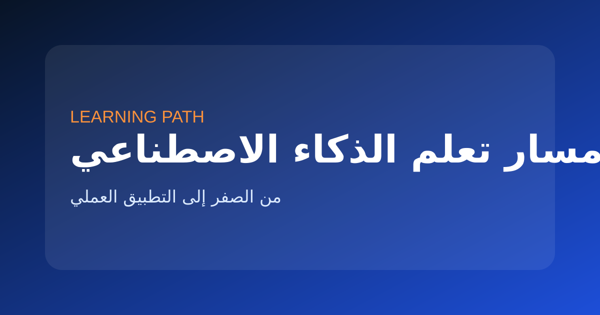
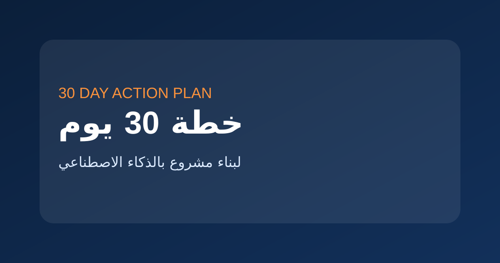

ما هو الذكاء الاصطناعي؟ شرح مبسط جداً للمبتدئين
شرح بسيط لمفهوم الذكاء الاصطناعي، أنواعه، وأمثلة من حياتنا اليومية.
من الصفر إلى الاحتراف: مسارات تعلم مبسطة، كورسات مجانية ومدفوعة، ونصائح عملية للمبتدئين
أفضل طريقة للتعلم هنا: ابدأ بالأساسيات، ثم جرّب أداة فعلية مثل ChatGPT أو Canva AI أثناء التعلم.
إذا كنت جديداً في عالم الذكاء الاصطناعي، ابدأ بهذه الخطوات البسيطة

شرح بسيط لمفهوم الذكاء الاصطناعي، أنواعه، وأمثلة من حياتنا اليومية.
أساسيات بايثون التي تحتاجها فقط للبدء في الذكاء الاصطناعي.
الإحصاء، الجبر الخطي، والاحتمالات – كل ما تحتاجه كمبتدئ.
حسب هدفك ومستواك، اختر المسار الذي يناسبك

خطة متكاملة مدتها 6 أشهر لتعلم الذكاء الاصطناعي من الصفر.

قائمة منظمة بأفضل الكورسات المجانية من جامعات عالمية وقنوات عربية.

5 مشاريع كاملة لبناء بورتفوليو قوي لسيرتك الذاتية.
إذا كنت تريد الجمع بين التعلم والتطبيق مباشرة، ابدأ بخطة التعلم ثم افتح أداة حقيقية تساعدك في تنفيذ ما تتعلمه يومًا بيوم.
مقالات عملية قصيرة تساعد الزائر على البدء والتطبيق بدون تشتت.
تعلم الذكاء الاصطناعي لا يحتاج إلى خبرة برمجية مسبقة. ابدأ بفهم معنى AI والفرق بينه وبين تعلم الآلة، ثم استخدم أدوات عملية مثل ChatGPT وCanva AI يوميًا لحل مشاكل حقيقية. ركّز على مهارة واحدة أولًا مثل الكتابة أو البحث أو إنشاء المحتوى، ولا تحاول تعلم كل شيء في وقت واحد.
الخطأ الأكبر هو مشاهدة الدورات دون تطبيق. الطريقة الصحيحة: تعلم فكرة صغيرة، طبّقها فورًا، ثم انتقل للخطوة التالية. اختر استخدامًا واحدًا مثل كتابة المحتوى أو التصميم أو البحث الذكي، واطلب من ChatGPT أن يشرح لك المفاهيم ويعطيك تمارين ويصحح إجاباتك.
ابدأ بثلاثة أيام لفهم المفاهيم الأساسية، ثم سبعة أيام لتجربة أدوات AI، ثم أسبوعين لاختيار تخصص واحد مثل المحتوى أو التصميم أو البرمجة. بعد ذلك انتقل إلى مشروع حقيقي: مقال، صفحة موقع، حملة محتوى، أو نموذج بسيط. التعلم الحقيقي يبدأ عند التطبيق.
أفضل تحويل من التعلم إلى التطبيق: بعد قراءة أي مقال تعليمي، افتح أداة واحدة وطبّق عليها فورًا بدل تأجيل التجربة.